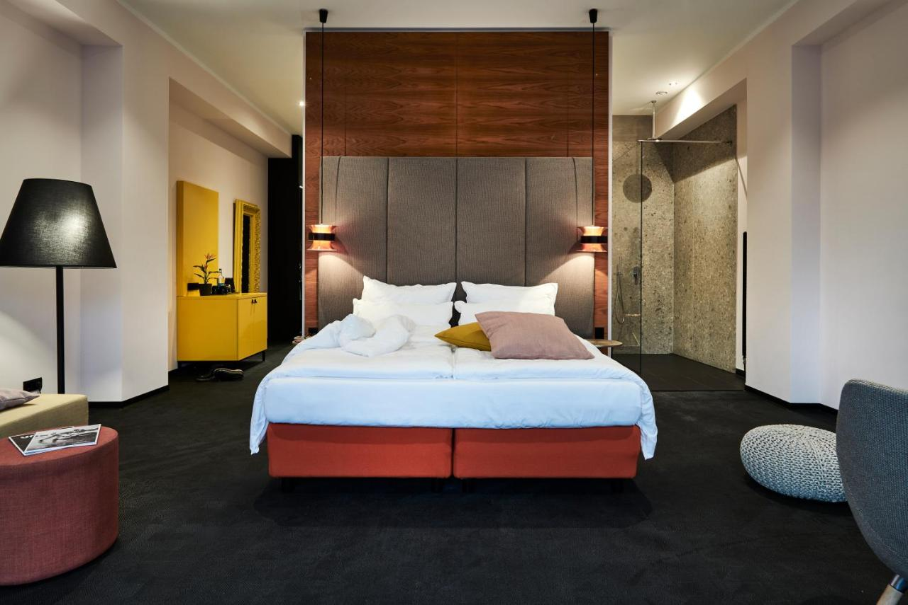

Berlin
- Hoteli
- Apartmani
- Hosteli
Hoteli
Hotel Berlin
Udaljenost od centra: 2.1 km
Udaljenost od postaje metroa/podzemne: 500 m
Obližnje atrakcije/znamenitosti: Nollendorfplatz, robna kuća KaDeWe, Trg Potsdamer Platz
Hotel 38
Udaljenost od centra: 1.4 km
Udaljenost od postaje metroa/podzemne: 150 m
Obližnje atrakcije/znamenitosti: nova sinagoga, Muzej nacionalne povijesti, Glavni kolodvor u Berlinu
Hotel Neuer Fritz

Udaljenost od centra: 1.1 km
Udaljenost od postaje metroa/podzemne: 300 m
Obližnje atrakcije/znamenitosti: Berliner Ensemble, Palace of Tears, kazalište Admiralspalast, zgrada parlamenta Reichstag
Apartmani
numa I Arc Sobe & Apartmani
Udaljenost od centra: 1.6 km
Udaljenost od postaje metroa/podzemne: 150 m
Obližnje atrakcije/znamenitosti: Mauermuseum, Saveznička kontrolna točka Checkpoint Charlie, Židovski muzej
Amalo Home Apartmani
Udaljenost od centra: 2.6 km
Udaljenost od postaje metroa/podzemne: 150 m
Obližnje atrakcije/znamenitosti: Rosa-Luxemburg-Platz, kazalište Volksbuhne, Alter Garnisonsfriedhof
Schoenhouse Berlin
Udaljenost od centra: 2.7 km
Udaljenost od postaje metroa/podzemne: 250 m
Obližnje atrakcije/znamenitosti: Rosa-Luxemburg-Platz, kazalište Volksbuhne, Alter Garnisonsfriedhof
Hosteli
Space Night Capsule Hostel
Udaljenost od centra: 1.5 km
Udaljenost od postaje metroa/podzemne: 350 m
Obližnje atrakcije/znamenitosti: Nova crkva Berlin, Kompleks Quartier Schuetzenstrasse, Trg Gendarmenmarkt, Mauermuseum, Waldeckpark, Trg Bebelplatz
Grand Hostel Berlin Classic
Udaljenost od centra: 2.0 km
Udaljenost od postaje metroa/podzemne: 100 m
Obližnje atrakcije/znamenitosti: tempodrom, Njemački tehnološki muzej, Trg Postdamer Platz
The Circus Hostel
Udaljenost od centra: 2.3 km
Udaljenost od postaje metroa/podzemne: 100 m
Obližnje atrakcije/znamenitosti: Alter Garnisonsfriedhof, Muzej nacionalne povijesti, Pergamon Muzej